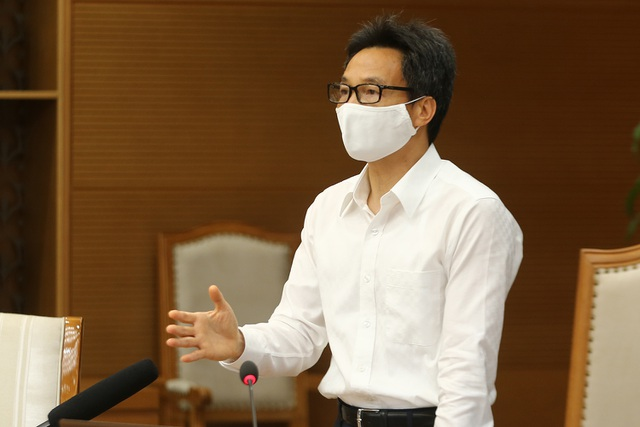

|

Ngày 10/5, Phó Thủ tướng Vũ Đức Đam, Trưởng Ban Chỉ đạo quốc gia phòng chống Covid-19 chủ trì họp Ban Chỉ đạo, thảo luận về tình hình dịch bệnh, việc chuẩn bị vật tư, trang thiết bị, sinh phẩm, bảo đảm tài chính… phục vụ công tác phòng, chống dịch. xem thêm
-
"Khả năng còn nguồn dịch khác trong cộng đồng ngoài 4 nguồn hiện tại"
- CSGT TPHCM nói gì về vụ tài xế loái siêu xe Ferrari bị còng tay
- Huấn Luận Viên Park Hang Seo nổi giận với Công Phượng
- CodeGym nhận giải thưởng Sao Khuê 2021 về lĩnh vực Đào tạo CNTT
- Top 4 những sai lầm của sinh viên IT
- Khoa công nghệ thông tin gồm những ngành nào? Nghề nào lương cao?
|
Tin Tức Sự Kiện
- Bắc Ninh:101 ca dương tính, nhân viên y tế kiệt sức ngủ gục tại chỗ
- 4 nhân viên Bệnh viện Chợ Rẫy phản ứng nặng khi chích ngừa Covid-19
- Hưng Yên : 2 ca dương tính với SARS-CoV-2 Là 2 mẹ con
- Cựu phi công kể về các chuyến bay chuyên cơ của ông Putin
- Ổ dịch huyện Thuận Thành lớn nhất nước , 90 ca dương tính SARS-CoV-2
- Phút cuối đơn độc của người Ấn Độ bên trong lò hỏa táng thời Covid
- Hải Phòng khẩn cấp tìm người liên quan 2 Covid-19 ghé trung tâm thương mại
- Diễn Biến dịch 10/5:Ca nhiễm mới tăng nhanh chưa từng có
- Bất chấp Covid-19, cơ sở massage vẫn mở cửa , hoạt động bán dâm
- CSGT TPHCM nói gì về vụ tài xế loái siêu xe Ferrari bị còng tay
- Huấn Luận Viên Park Hang Seo nổi giận với Công Phượng
|
|